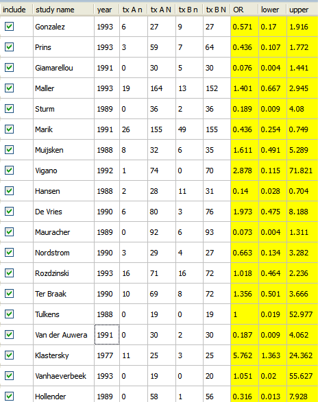

This section gives an example that shows how to open a data set that has already been created. To open the sample data set:
Open Meta-Analyst displays the data shown below.

Source: Barza, M., Ioannidis, J., Cappelleri, J., Lau, J. "Single or multiple daily doses of aminoglycosides: a meta-analysis." BMJ, Vol. 312, 1966.
| Entering and Saving Data | Example: Meta-Analysis of Binary Data | |